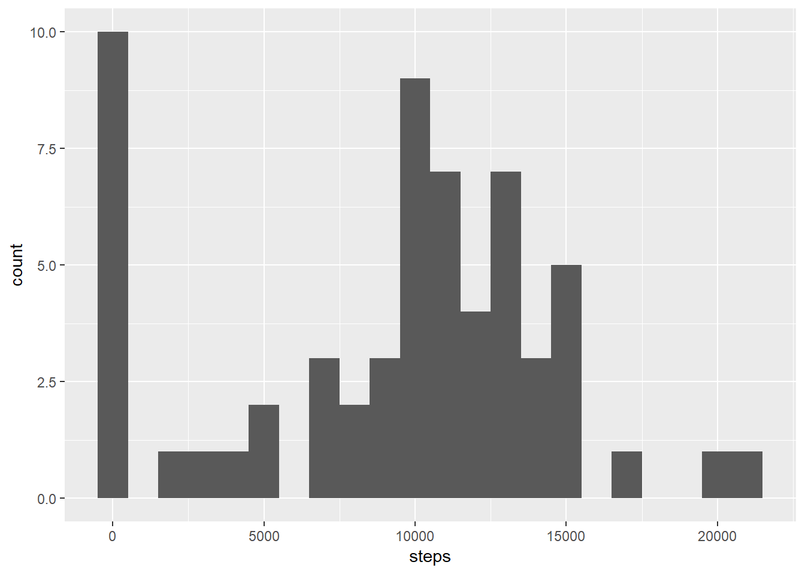
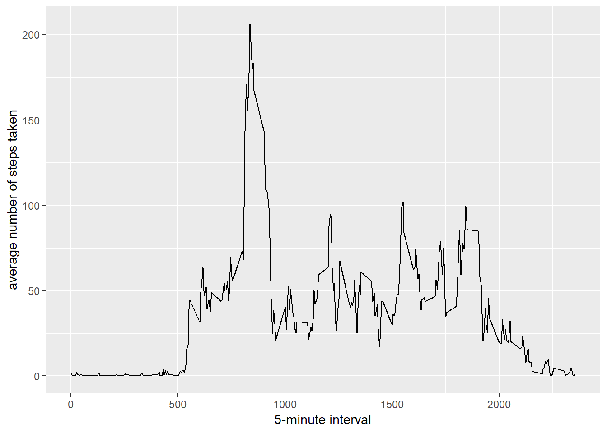

0.1 Loading and preprocessing the data
unzip("activity.zip")
activity <- read_csv("activity.csv")
activity$date <- ymd(activity$date)0.2 What is mean total number of steps taken per day?
# total steps
total.steps <- activity %>% group_by(date) %>% summarise(steps = sum(steps,na.rm = TRUE))
#histogram
ggplot(total.steps, aes(x=steps)) +
geom_histogram(binwidth=1000)
0.2.1 mean
# mean
mean(total.steps$steps,na.rm = TRUE)## [1] 9354.230.2.2 median
# median
median(total.steps$steps, na.rm = TRUE)## [1] 103950.3 What is the average daily activity pattern?
interval_avg <- activity %>%
group_by(interval) %>%
summarise(mean = mean(steps,na.rm = TRUE))
ggplot(interval_avg, aes(x = interval, y = mean))+
geom_line()+
xlab("5-minute interval") +
ylab("average number of steps taken")
# interval with the maximum number of steps
interval_avg %>% filter(mean == max(mean))## # A tibble: 1 x 2
## interval mean
## <int> <dbl>
## 1 835 206.0.4 Imputing missing values
sum(is.na(activity$steps))## [1] 23040.5 R Markdown
This is an R Markdown document. Markdown is a simple formatting syntax for authoring HTML, PDF, and MS Word documents. For more details on using R Markdown see http://rmarkdown.rstudio.com.
When you click the Knit button a document will be generated that includes both content as well as the output of any embedded R code chunks within the document. You can embed an R code chunk like this:
summary(cars)## speed dist
## Min. : 4.0 Min. : 2.00
## 1st Qu.:12.0 1st Qu.: 26.00
## Median :15.0 Median : 36.00
## Mean :15.4 Mean : 42.98
## 3rd Qu.:19.0 3rd Qu.: 56.00
## Max. :25.0 Max. :120.000.6 Including Plots
You can also embed plots, for example:

Note that the echo = FALSE parameter was added to the code chunk to prevent printing of the R code that generated the plot.